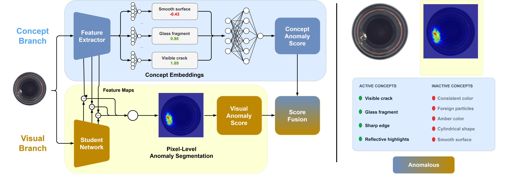
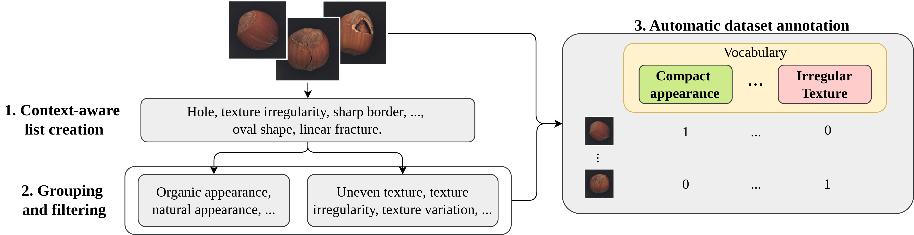
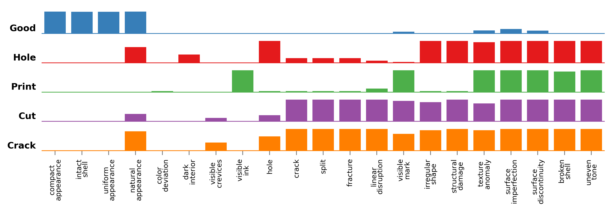
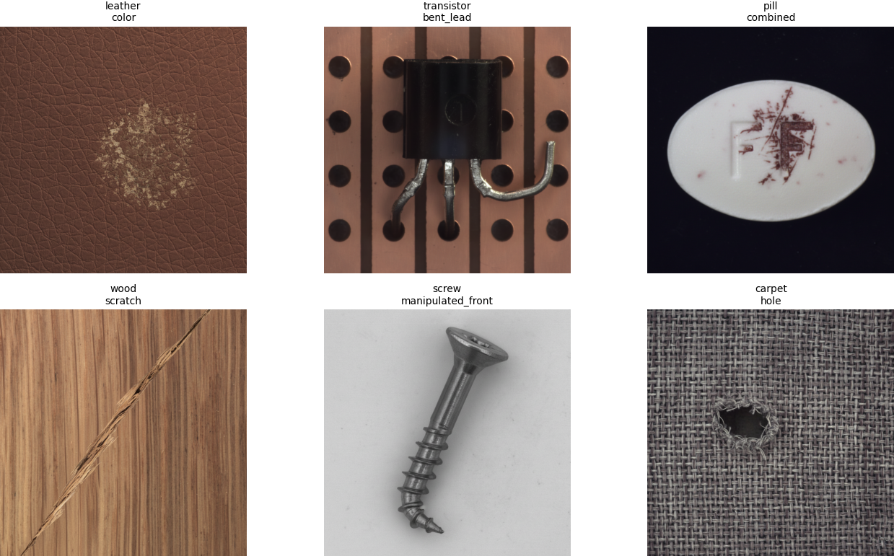

static/images/teaser.png (Figure 1 of the paper: architecture + example output)Abstract
In recent years, Visual Anomaly Detection (VAD) has attracted significant attention due to its high interpretability, as it provides visual explanations by highlighting anomalous regions within an image. However, although these visual explanations can be helpful, they lack a direct and semantically meaningful interpretation for users. To address this limitation, we propose extending Concept Bottleneck Models (CBMs) to the VAD setting. By learning meaningful concepts, the network can provide human-interpretable descriptions of anomalies, offering a novel and more insightful way to explain them.
Our main contributions are: (i) we introduce a concept-based framework for anomaly explanation by extending CBMs to the VAD setting for the first time; (ii) we evaluate multiple supervision regimes, ranging from supervised to unsupervised anomaly settings; (iii) we propose a dual-branch architecture that combines a CBM-based Concept branch for concept-level explanations with a Visual branch for pixel-level anomaly localization, bridging semantic and spatial interpretability. When evaluated across three well-established VAD benchmarks, our approach, Concept-Aware Visual Anomaly Detection (CONVAD), achieves performance comparable to classic VAD methods (up to 0.97 I-AUROC on MVTec AD) while providing richer, concept-driven explanations. A user study (582 responses) shows that CONVAD explanations are rated effective in 73.5% of cases (vs. 60.7% for the SOTA VLM-based explainer Anomaly-OV) and misleading in only 3.1% (vs. 11.7%). Beyond explanation quality, CBMs enable human-in-the-loop correction: concept-level interventions further boost detection in the challenging unsupervised setting, closing part of the gap to fully supervised performance.
(supervised)
(Anomaly-OV: 60.7%)
(Anomaly-OV: 11.7%)
(AnomalyGPT: ~30 GB)
Contributions
1 · CBMs for VAD
The first adaptation of Concept Bottleneck Models to Visual Anomaly Detection, with an automated VLM-based pipeline that builds concept-annotated datasets for MVTec AD, VisA and Real-IAD.
2 · Supervision regimes
Supervised, semi-supervised (one real anomaly per defect type) and unsupervised (synthetic anomalies only) settings, quantifying the trade-off between labeling effort and performance.
3 · Dual-branch design
A Concept branch for semantic explanations plus a student–teacher Visual branch for pixel-level heatmaps, sharing one feature extractor.
Building a Concept Dataset for VAD
CBMs need images annotated with concepts from a predefined vocabulary, and no such dataset exists for VAD. We build one with a VLM-based pipeline:
- Context-aware list creation. On a 5% sample covering all defect types, a VLM (Gemma 3) first describes each image, given the object category and defect type, then extracts up to five visual concepts.
- Grouping and filtering. Related concepts are merged (from hundreds down to fewer than fifty), and near-duplicates are removed using CLIP text-embedding similarity.
- Automatic annotation. Every image receives binary concept labels from the VLM. Against 400 manually annotated images, the pipeline reaches 91.3% accuracy.

static/images/concept_pipeline.png (Figure 2: concept dataset pipeline)
static/images/concept_distribution_hazelnut.png (Figure 3: hazelnut concept distribution)CONVAD
CONVAD has two branches that share a feature extractor (MobileNet-v2), which encourages consistency between semantic and spatial explanations.
Concept branch
A CBM trained jointly end-to-end to predict concepts and the anomaly label. The ranked per-concept contributions form the explanation. Experts can correct concept activations at test time without retraining.
Visual branch
A student network trained on normal samples only to match the frozen Concept-branch features. The feature discrepancy yields a pixel-level anomaly heatmap.
Score fusion
The final score is the max of the calibrated visual decision and the concept probability. The Concept branch drives 88–91% of predictions, so most detections come with concept explanations.
Synthetic anomalies
To reduce reliance on real defects, we generate realistic anomalies by prompting an image-editing model (Gemini 2.5 Flash Image) to add a given defect to a normal image while preserving pose and view. This enables the semi-supervised and unsupervised regimes.

static/images/synthetic_examples.png (Supplementary Fig. 6: well-generated synthetic anomalies)Results
Comparison across supervision regimes (MVTec AD)
| Metric | Zero-shot | Unsupervised (zero-anomaly-shot) | Semi-supervised | Supervised | |||||||
|---|---|---|---|---|---|---|---|---|---|---|---|
| Anomaly-OV | CONVAD | PatchCore | STFPM | Tiny-Dinomaly | AnomalyGPT | CONVAD | DevNet | DRA | CONVAD | UNet | |
| I-AUC | 0.94 | 0.81 | 0.86 | 0.88 | 0.91 | 0.97 | 0.87 | 0.80 | 0.76 | 0.96 | 0.65 |
| P-AUC | – | 0.91 | 0.96 | 0.88 | 0.96 | 0.93 | 0.92 | 0.92 | – | 0.95 | 0.77 |
| C-AUC | – | 0.73 | – | – | – | – | 0.72 | – | – | 0.86 | – |
| Memory [MB] | 1,768 | 17.6 | 38.4 | 11.1 | 36.5 | 30,520 | 17.6 | 44.7 | 44.7 | 17.6 | 10.3 |
I-AUC / P-AUC / C-AUC: image-, pixel- and concept-level AUROC. “–”: the method cannot produce this output.
In the supervised and semi-supervised settings CONVAD outperforms the compared baselines. In the unsupervised setting, higher-scoring methods come with trade-offs: AnomalyGPT needs over 30 GB of memory, and Anomaly-OV produces no pixel-level heatmaps. CONVAD delivers concept explanations, heatmaps and scores in 17.6 MB.
User study: are the explanations useful?
32 participants judged 582 explanations on MVTec and VisA images. An explanation is effective if it helps the user verify whether the prediction is right, and misleading if it convinces them to trust a wrong prediction.
| Signal | AnomalyGPT | Anomaly-OV | CONVAD |
|---|---|---|---|
| Effective ↑ | 33.2% | 60.7% | 73.5% |
| Misleading ↓ | 18.4% | 11.7% | 3.1% |
| Useless ↓ | 48.4% | 27.6% | 23.5% |
The tight coupling between concept scores and the prediction, as opposed to post-hoc verbalization by VLMs, helps keep errors from being hidden behind plausible-sounding text.
BibTeX
@article{stropeni2025explainable,
title={Explainable Visual Anomaly Detection via Concept Bottleneck Models},
author={Stropeni, Arianna and Zaccaria, Valentina and Borsatti, Francesco and Pezze, Davide Dalle and Barusco, Manuel and Susto, Gian Antonio},
journal={arXiv preprint arXiv:2511.20088},
year={2025}
}